Aside from my technical interests, here are some things I enjoy.
- Skateboarding. Live for it. Broke my collarbone from it.
- Music. I’ve played the piano more than half of my life. I also dabble in mixing and production. I’m a Radiohead fan.
- Photography. Love it, but I don’t take as many photos as I’d like to. Ricoh GR III, Nikon Z50, and Canon Powershot ELPH 110.
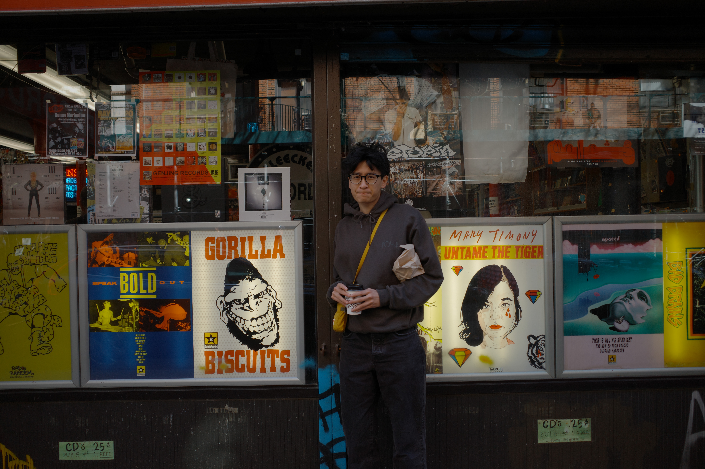
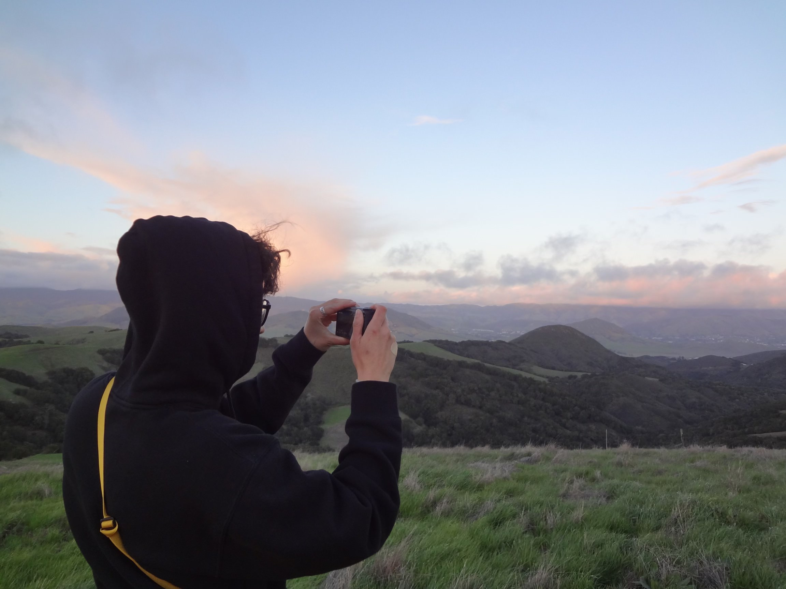


 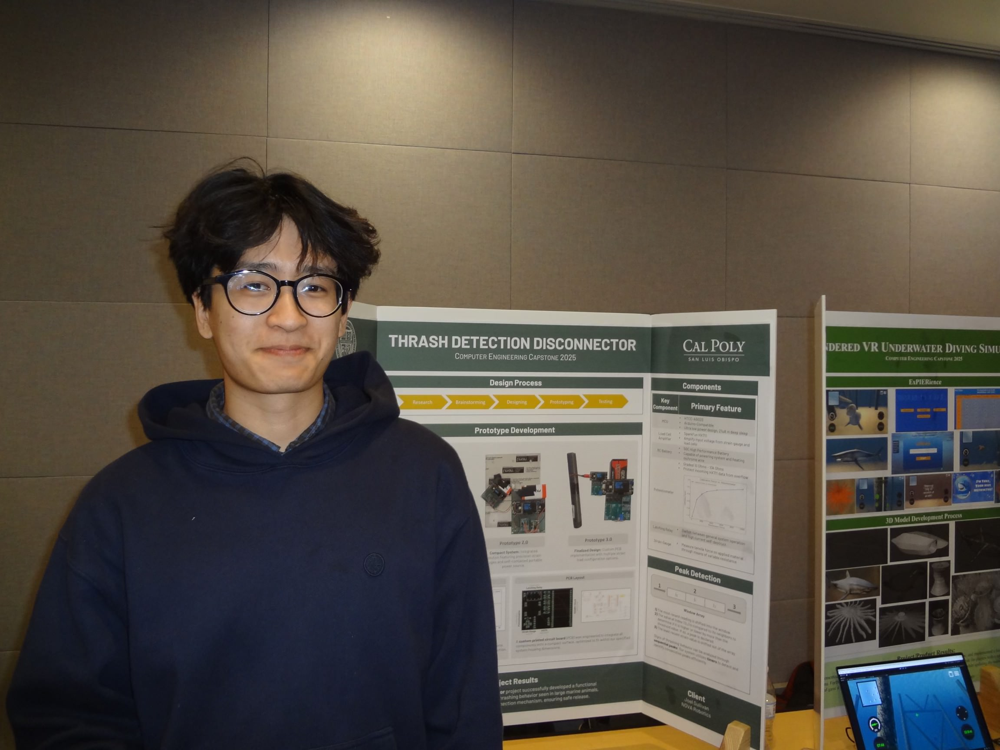
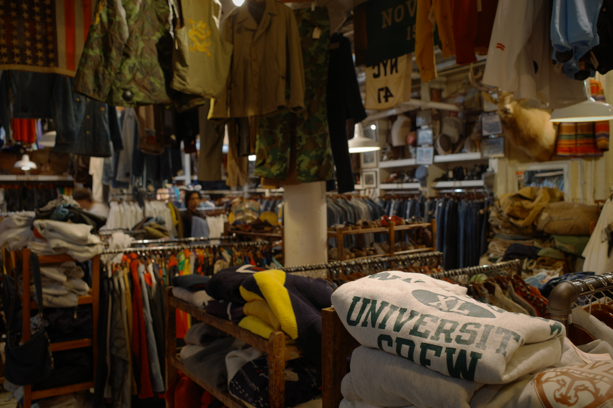
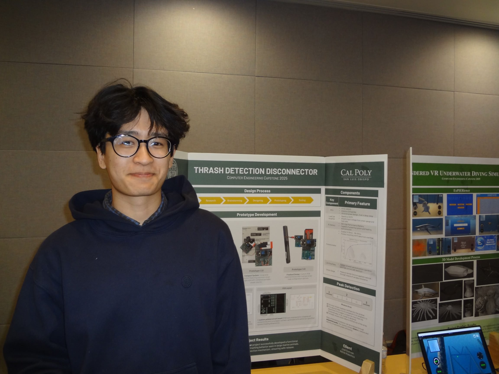
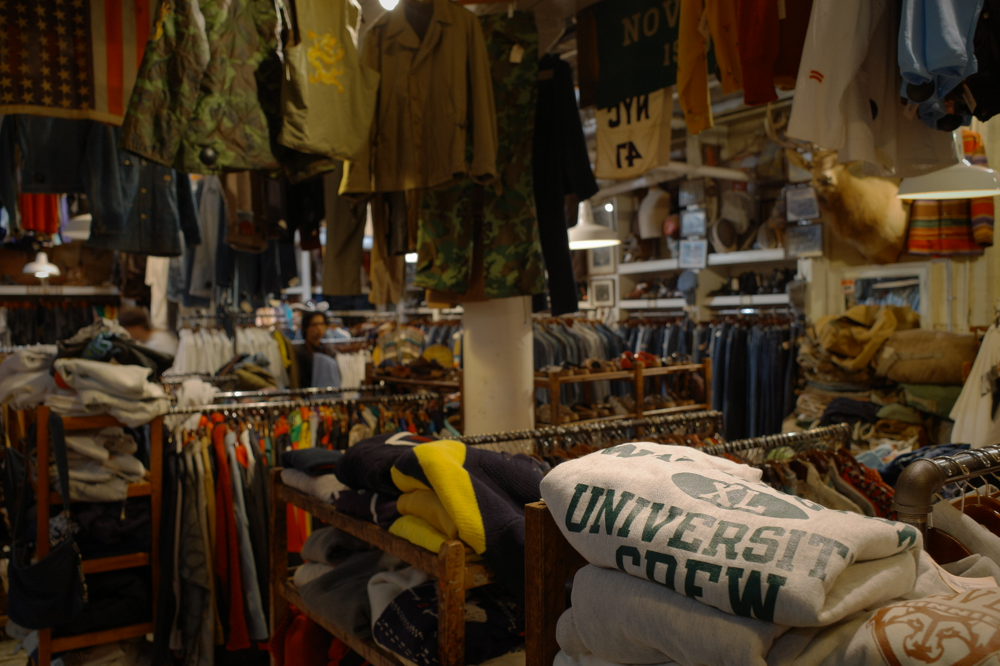
 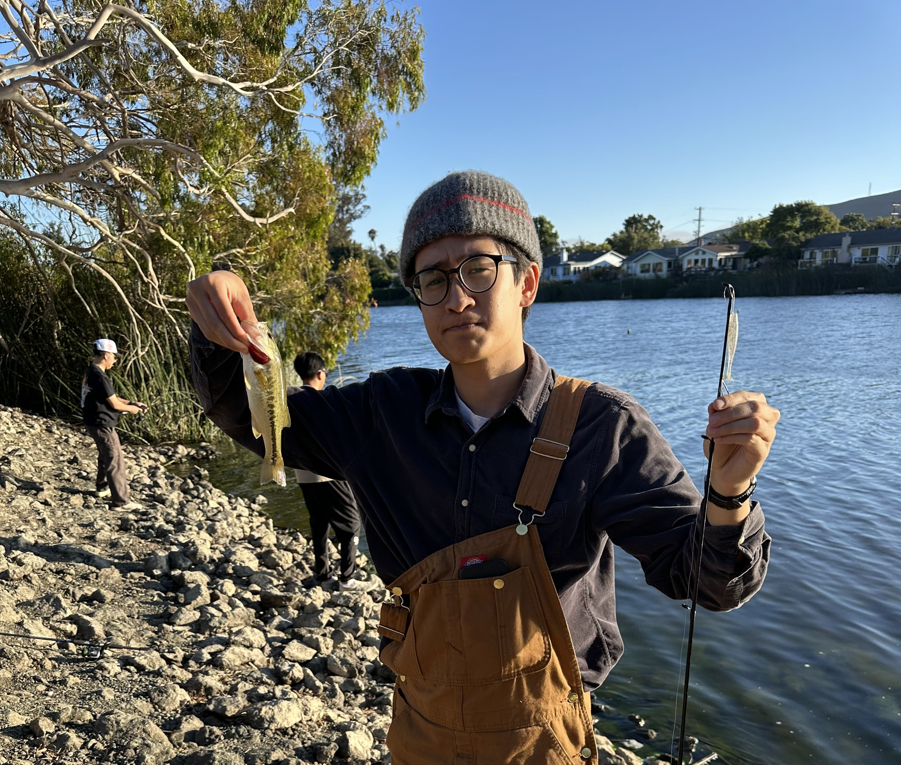
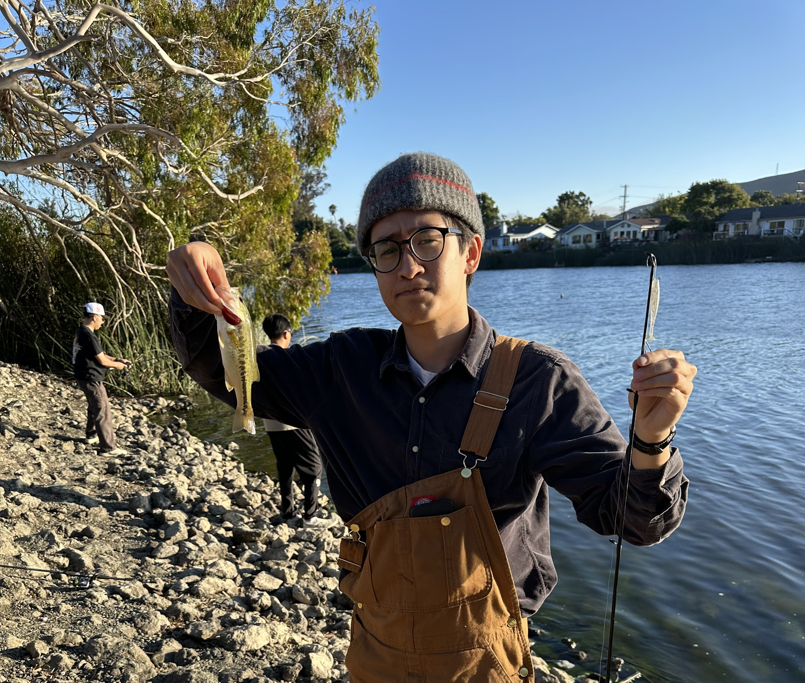
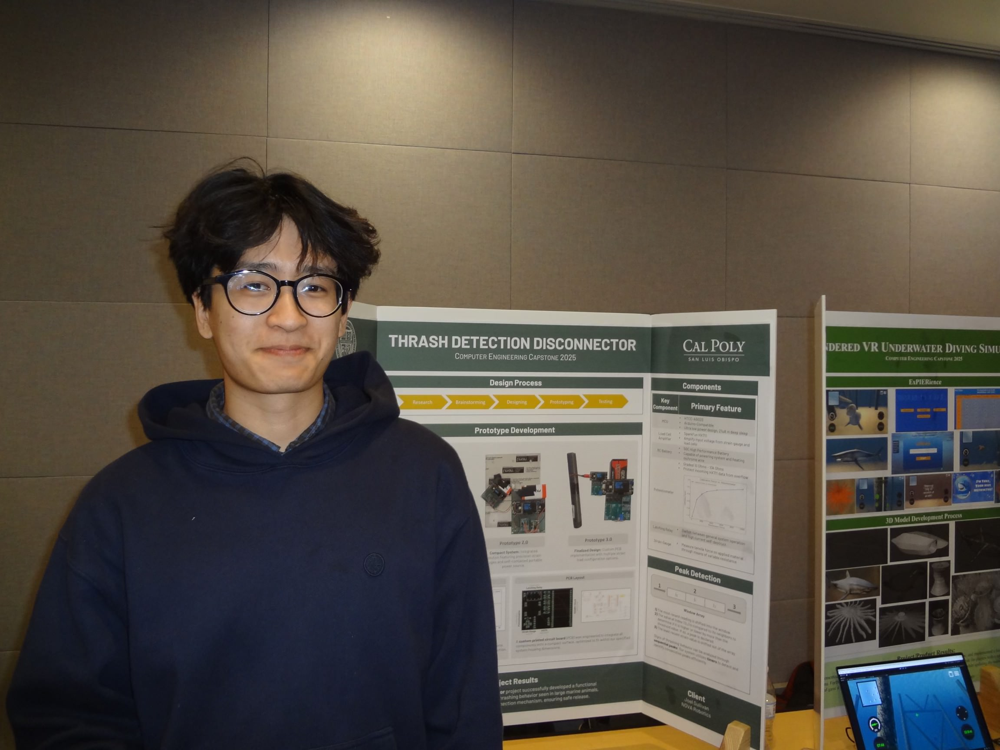
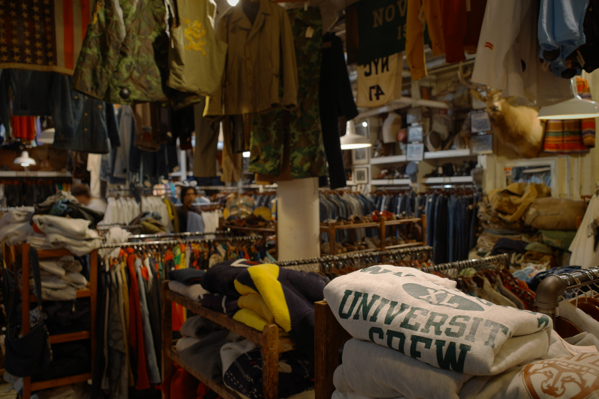
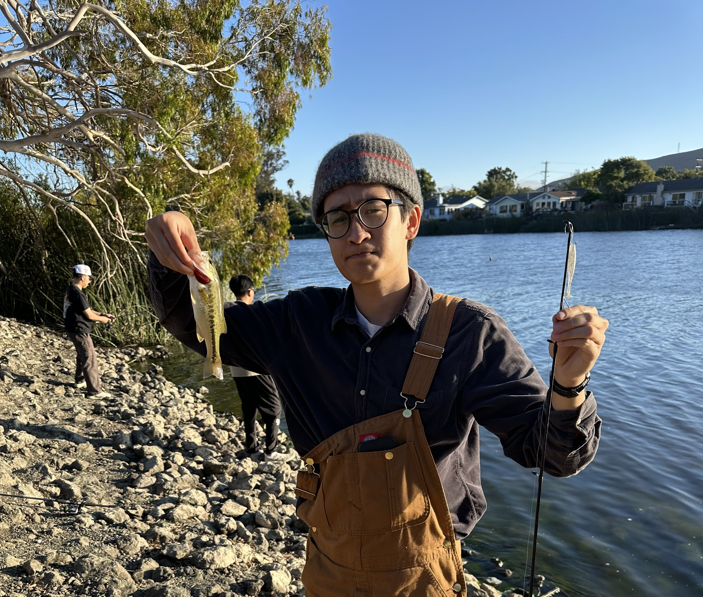